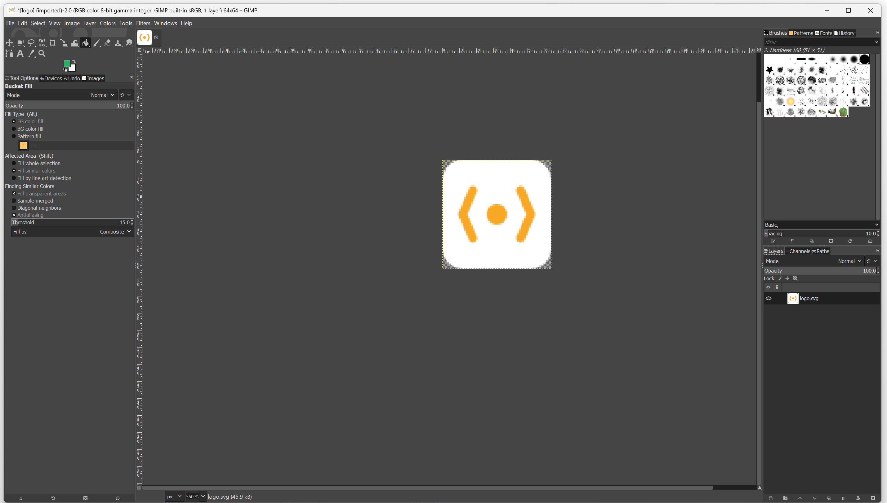

🖼️ GIMP – Canvas & Werkzeuge
Deine digitale Werkstatt für Pixelgrafiken
🖥️ 1. Die drei Hauptfenster
Beim Start zeigt GIMP standardmäßig drei Fenster:

(2) Werkzeugkasten – alle Werkzeuge auf einen Blick
(3) Ebenen-, Kanäle-, Pfade-Dock – zentral für fortgeschrittene Bearbeitung
🛠️ 2. Werkzeuggruppen im Überblick
Der Werkzeugkasten ist in logische Gruppen unterteilt. Hier die wichtigsten:
| Gruppe | Werkzeuge | Verwendung |
|---|---|---|
| Auswahl | Rechteck-, Ellipsen-, Lasso-Werkzeug | Bereiche markieren (z. B. zum Freistellen) |
| Malen | Pinsel, Stift, Radierer, Farbeimer | Zeichnen, Retusche, Füllen |
| Transformieren | Verschieben, Drehen, Skalieren, Perspektive | Objekte verändern |
| Farben | Farbpipette, Verlauf | Farben aufnehmen oder sanft übergehen lassen |
📦 3. Die Docks: Ebenen, Kanäle & Pfade
Rechts vom Hauptfenster findest du die Docks – schaltbare Panels mit wichtigen Funktionen:
| Dock | Icon | Funktion | Tastenkürzel |
|---|---|---|---|
| Ebenen | 📜 | Layer verwalten, Sichtbarkeit, Reihenfolge ändern | Strg+L |
| Kanäle | 🎨 | RGB-Kanäle einzeln bearbeiten | - |
| Pfade | ✏️ | Vektorpfade erstellen & bearbeiten | - |
| Werkzeugoptionen | ⚙️ | Einstellungen für das aktive Werkzeug | - |
| Farben | 🌈 | Farbkorrektur: Helligkeit, Kontrast, Sättigung | - |
🎨 4. Werkzeug-Optionen verstehen
Jedes Werkzeug hat unten im Werkzeugkasten oder im Dock "Werkzeugoptionen" spezifische Einstellungen:
Beispiel: Pinsel-Werkzeug
- Größe: Durchmesser des Pinsels (1-5000 Pixel)
- Härte: Harte (scharfe) vs. weiche (verschwommene) Kanten
- Deckkraft: Wie stark die Farbe aufgetragen wird (0-100%)
- Dynamik: Druckempfindlichkeit (für Grafiktabletts)
📝 Merke: Die gleichen Werkzeuge können mit unterschiedlichen Optionen völlig unterschiedliche Ergebnisse erzielen!
⌨️ 5. Die wichtigsten Tastenkürzel
| Tastenkürzel | Funktion | Wann nützlich? |
|---|---|---|
| Strg+O | Bild öffnen | Schneller Start |
| Strg+S | Speichern (XCF) | Regelmäßig zwischenspeichern! |
| Strg+Z | Rückgängig | Fehler korrigieren |
| Strg+Shift+Z | Wiederherstellen | Zu viel zurück? |
| Strg+C / Strg+V | Kopieren / Einfügen | Objekte duplizieren |
| Strg+Shift+E | Exportieren | Schnell als PNG/JPG speichern |
| R | Rechteck-Auswahl | Schneller Wechsel |
| B | Pinsel | Zum Malen |
| E | Radierer | Korrekturen |
| Shift+Q | Schnellmaske | Präzise Auswahlen |
✂️ 6. Objekte freistellen – Schritt für Schritt
So stellst du ein Motiv frei (z. B. eine Person vom Hintergrund):
- Öffne das Bild in GIMP
- Wähle das Lasso-Werkzeug (oder Intelligentes Scheren-Werkzeug)
- Umrahme das Motiv möglichst genau
- Drücke
Strg+C(kopieren), dannStrg+V(einfügen) - Im Ebenen-Dock erscheint eine neue „schwebende Auswahl“ → klicke auf „In Ebene umwandeln“
- Der Hintergrund ist nun transparent (graues Schachbrettmuster)
🎨 7. Farben verwenden
GIMP arbeitet mit zwei Farben gleichzeitig:
- Vordergrundfarbe: Für Pinsel, Text, Formen
- Hintergrundfarbe: Für Radierer, Verläufe
Klicke auf die Farbfelder im Werkzeugkasten, um neue Farben auszuwählen.
Mit der Farbpipette kannst du Farben direkt aus dem Bild übernehmen.
↔️ 8. Skalieren & Transformieren
Um ein Bild oder eine Auswahl zu vergrößern/verkleinern:
- Wähle das Objekt (oder die ganze Ebene)
- Klicke auf das Skalieren-Werkzeug
- Ziehe an den Anfasspunkten oder gib exakte Werte ein
- Klicke auf Skalieren
🔁 Tipp: Halte Umschalt gedrückt, um das Seitenverhältnis zu erhalten.
🌀 9. Filter anwenden
Filter verändern das Aussehen deines Bildes (Weichzeichnung, Schärfe, Kunststile).
So geht’s:
- Wähle die gewünschte Ebene
- Gehe zu Filter → [Kategorie] → [Effekt]
- Stelle die Parameter ein und klicke auf OK
Das macht sie perfekt für experimentelles Arbeiten.
➡️ 7. Vorbereitung auf Ebenen
Alles, was du hier gelernt hast – Freistellen, Farben, Transformation – wird in der nächsten Lektion mit Ebenen kombiniert.
Denn: Erst mit Ebenen kannst du mehrere Objekte unabhängig voneinander bearbeiten.